The deck from class, as a page: every slide, its notes and its diagrams. A faithful copy — you do not need the .pptx file.
Doing Maths on Whole Lists of Numbers
- NumPy: one line for a whole column, a whole table, a million rows
APPLICATIONS OF MATHEMATICS IN INDUSTRY Module 0 — Industry Toolkit & Math-to-Code Bridge · Session S2 · 2 hours Module 0 -- Weekend 1, Sunday
The problem: one giant table, one afternoon
- A property site like MagicBricks holds a huge table of past flats: each row is one flat with its size, age, location, and price.
- There are thousands of rows -- sometimes lakhs.
- Your boss wants two things done by evening: raise every listed price by 8%, and figure out a fair price for a flat nobody has listed yet.
- Editing cells one by one is not an option.
- Today you learn the tool that does the whole job in one line.
The one idea, in a single picture
- Think of a column of prices in a spreadsheet.
- Multiply the whole column by 1.08 -- every cell changes.
- Add two columns and they add up row by row.
- No loop, no cell-by-cell editing.
- This is what NumPy does for you.
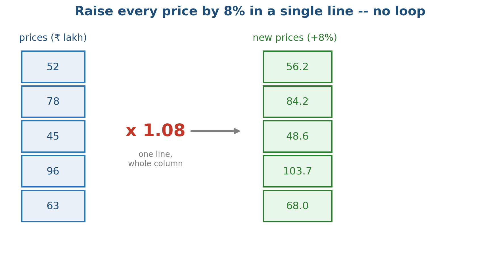
Multiply the whole column by 1.08 and every price updates at once.
An array is just a list of numbers -- or a table of numbers -- that you can do maths on all at once, no loop required.
New here? Your ten-minute on-ramp
- This room has people from maths, commerce, CS, and first-time coders. Everyone belongs here.
- New to code? Every notebook cell has a play button. Session 0 set up your tools; 'Python in 15 minutes' is a quick primer.
- New to lists or tables of numbers? The 'Vectors and matrices' primer explains it in 10 minutes with pictures, no proofs.
- Any unfamiliar word is in the glossary.
- Already comfortable with linear algebra? Check the 'Stretch (optional)' cells for eigenvectors, SVD, and the normal equation.
What we'll cover
- 1 The problem and the one idea (done)
- 2 Why arrays are better than loops for number-crunching
- 3 Lists and tables of numbers: shape, indexing, slicing
- 4 Combining arrays: broadcasting and the two types of multiplication
- 5 A table that can solve problems: linear systems
- 6 Fitting a line through data and making predictions
Where we are in the course
- Session 0: your tools are working -- Python, notebooks, plots.
- Session 1: variables, loops, and functions.
- Today: NumPy -- doing maths on thousands of numbers at once.
- Almost every later session builds on this: data cleaning, ML, finance.
- You do NOT need any maths background for today's main content.
1 - Why arrays beat loops
The trouble with a plain Python list
- A plain list can hold any type: numbers, text, mixed. That flexibility comes with memory overhead per slot.
- To add two lists element by element, you must write a for-loop.
- Python loops are slow -- each iteration pays the interpreter overhead.
- With a million numbers, that is a million slow steps.
NumPy's answer: the array
- An array stores only one type of number, packed densely in memory.
- You write the operation once: prices * 1.08 scales every element.
- The looping happens inside fast compiled C code, not in Python.
- This approach is called vectorisation. The rule for today:
- Always reach for a whole-array operation before writing a loop.
Raise every price by 8% in one line
- One multiplication touches all five prices at once -- that is vectorisation.
CODE prices_lakh = np.array([55.0, 72.0, 40.0, 98.0, 85.0]) # scale every price by 1.08 -- one line, no loop new_prices = prices_lakh * 1.08 print("old prices :", prices_lakh) print("new prices :", new_prices.round(2)) OUTPUT ▸ old prices : [55. 72. 40. 98. 85.] new prices : [ 59.4 77.76 43.2 105.84 91.8 ]
How much faster? A lot.
- The vertical axis is a log scale.
- The gap grows with data size.
- At 10 million numbers,
- the loop is painfully slow.
- Same result, a fraction of the time.
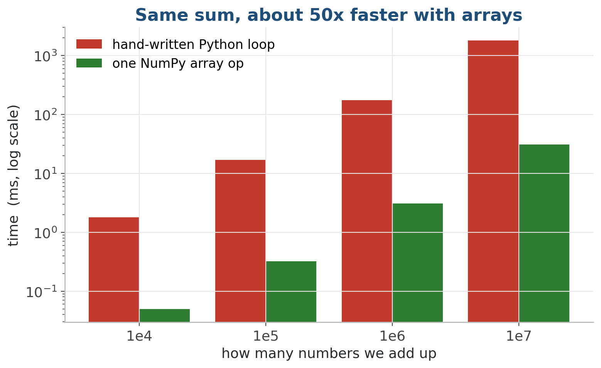
Adding N numbers: arrays leave Python loops far behind. (Illustrative timings; note the log scale.)
2 - Lists and tables of numbers
Two facts describe any array: shape and dtype
- Everything in NumPy is an array.
- Shape: how big it is in each direction. Written as a tuple: (5,) is a list of 5; (3, 4) is 3 rows and 4 columns.
- dtype: what kind of number fills every slot -- int or float.
- When something breaks, printing .shape and .dtype fixes 90% of bugs.
One list, one table, one stack of tables
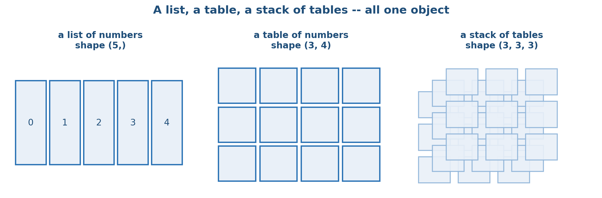
A list, a table, and a stack -- all the same object, differing only in shape.
The same shape, in everyday words
Making arrays (we will do this live)
- From a list: np.array([52, 78, 45]).
- Pre-filled: np.zeros, np.ones, np.full -- you give a shape.
- Evenly spaced: np.arange (count) and np.linspace (n points between two values).
- Reshape: a.reshape(3, 4) -- total element count must stay the same.
- These are demonstrated live in the notebook, not memorised.
3 - Pull pieces out, then combine
Pull out a row, a column, or a block
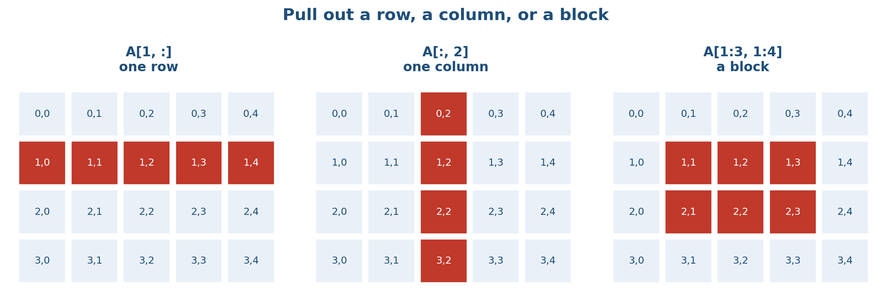
A[1, :] is a row, A[:, 2] is a column, A[1:3, 1:4] is a block.
Slicing rules worth saying out loud
- Counting starts at 0. The first row is row 0; the last item is index -1.
- A range a:b includes a but stops just before b.
- Leave a side blank to mean 'to the end': prices[2:] or prices[:3].
- Pick by condition: prices[prices > 50] keeps only values above 50.
- A slice is a view, not a copy -- editing it edits the original.
Grab one flat, all the sizes, a block
- A comma separates the two axes; a colon means 'all of this direction'.
CODE flats = np.array([[650, 8, 55], [820, 3, 72], [500, 15, 40], [1100, 1, 98]]) print("one flat (flats[1, :]) :", flats[1, :]) print("all sizes (flats[:, 0]) :", flats[:, 0]) print("a block (flats[0:2, 0:2]):") print(flats[0:2, 0:2]) OUTPUT ▸ one flat (flats[1, :]) : [820 3 72] all sizes (flats[:, 0]) : [ 650 820 500 1100] a block (flats[0:2, 0:2]): [[650 8] [820 3]]
Broadcasting: different shapes still combine
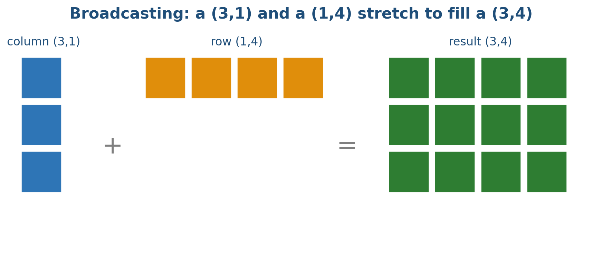
A (3,1) column and a (1,4) row stretch to fill a (3,4) shape, then add.
The broadcasting rules (just two)
- Line up the two shapes from the right, one axis at a time.
- Two axes fit if they are equal, or if one of them is 1.
- An axis of size 1 gets stretched to match the other.
- If neither is equal nor 1, NumPy raises an error.
- A single number (scalar) broadcasts against anything: 1.08 * prices.
Add one adjustment row to every flat
- The single (3,) row stretches down all three rows -- no loop, no manual copying.
CODE small_flats = np.array([[650, 8, 55.0], [820, 3, 72.0], [500, 15, 40.0]]) # one (3,) row, added to EVERY row of the table adjustment = np.array([10, 0, 5.0]) print(small_flats + adjustment) OUTPUT ▸ [[660. 8. 60.] [830. 3. 77.] [510. 15. 45.]]
Broadcasting is the loop-skipping mechanism: line up the shapes and let NumPy handle the repetition.
4 - Two kinds of multiply
Element-wise * is not matrix multiply @
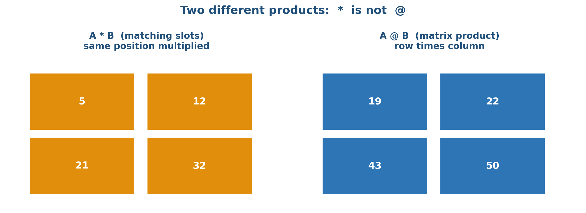
A * B multiplies matching positions; A @ B is the row-times-column product.
What @ actually does: row times column
- Take a row of A and a column of B.
- Multiply the numbers that line up.
- Add those products -- that is one cell.
- Top-left: 1x5 + 2x7 = 19.
- Repeat for every row-column pair.
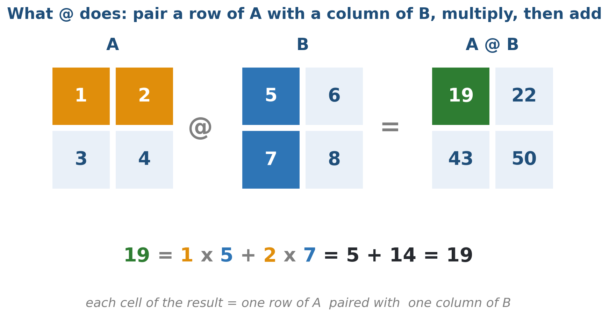
Each cell of A @ B is one row of A paired with one column of B -- multiply, then add. Here the top-left cell is 1x5 + 2x7 = 19.
See the difference: A * B vs A @ B
- Same two tables, two different products: * pairs slots, @ combines rows with columns.
CODE A = np.array([[1, 2], [3, 4]]) B = np.array([[5, 6], [7, 8]]) print("A * B (matching slots):") print(A * B) print("A @ B (rows times columns):") print(A @ B) OUTPUT ▸ A * B (matching slots): [[ 5 12] [21 32]] A @ B (rows times columns): [[19 22] [43 50]]
Which multiply do I want?
- * (the star)
- @ (the at-sign)
- A * B
- Multiplies matching positions
- Same shape (or broadcastable)
- Scaling, masks, weighting
- Result keeps the same shape
- A @ B
- True matrix multiplication
- Inner dimensions must match
- Linear maps, dot products
- (m,n) @ (n,p) -> (m,p)
5 - Solve a small system
Solving a system, in plain words
- Two clues, two unknowns: '2 samosas + 1 chai = Rs 50; 1 samosa + 3 chai = Rs 50'.
- Each clue is an equation. The unknowns: price of a samosa, price of chai.
- Stack the counts into a table A and the totals into a list b.
- Ask solve(A, b) for the two prices -- one line.
The two clues become a matrix equation
- Blue table A: how many of each item per bill.
- Middle: the prices we are solving for.
- Green: the two bill totals, 50 and 50.
- Row 1 reads: 2 samosa + 1 chai = 50.
- Row 2 reads: 1 samosa + 3 chai = 50.
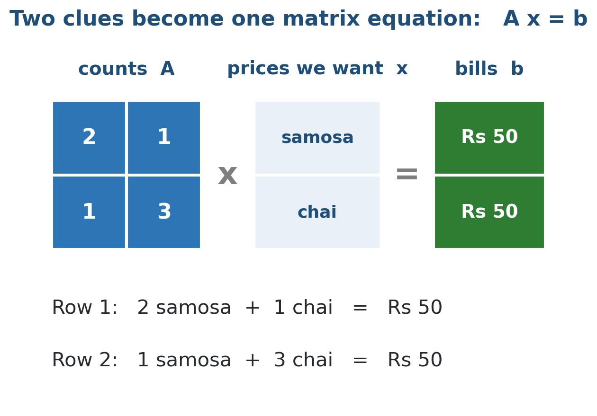
The counts fill the table A, the unknown prices form x, the two bills form b. Solving A x = b gives both prices at once.
Solve for the samosa and chai prices
- The counts go in the table A, the totals in b; one call returns both unknown prices.
CODE OUTPUT ▸ # 2 samosas + 1 chai = 50; 1 samosa + 3 chai = 50 A = np.array([[2.0, 1.0], [1.0, 3.0]]) b = np.array([50.0, 50.0]) prices = np.linalg.solve(A, b) print("samosa price : Rs", round(prices[0], 2)) print("chai price : Rs", round(prices[1], 2)) samosa price : Rs 20.0 chai price : Rs 10.0
Prefer solve over inv
- Do instead
- x = solve(A, b)
- Solves directly in one careful step
- More accurate
- Faster, standard practice
- Avoid
- x = inv(A) @ b
- Builds a whole inverse you never needed
- Loses accuracy along the way
- Slower, especially for large tables
6 - Fit a straight line
Fitting a line: what the lab is doing
- We have past flats: for each one, a size and the price it sold for.
- We want a rule: give a size, get a fair price estimate.
- The simplest rule is a straight line through the cloud of past sales.
- Find that line and you can price a flat nobody has listed yet.
Draw the best line, read a new price off it
- Each dot is one past flat sale.
- Bigger flats cost more, so dots drift up.
- Draw the one line that best follows the drift.
- 'Best' means the total miss from all points is smallest.
- A new flat's price is read off the star.
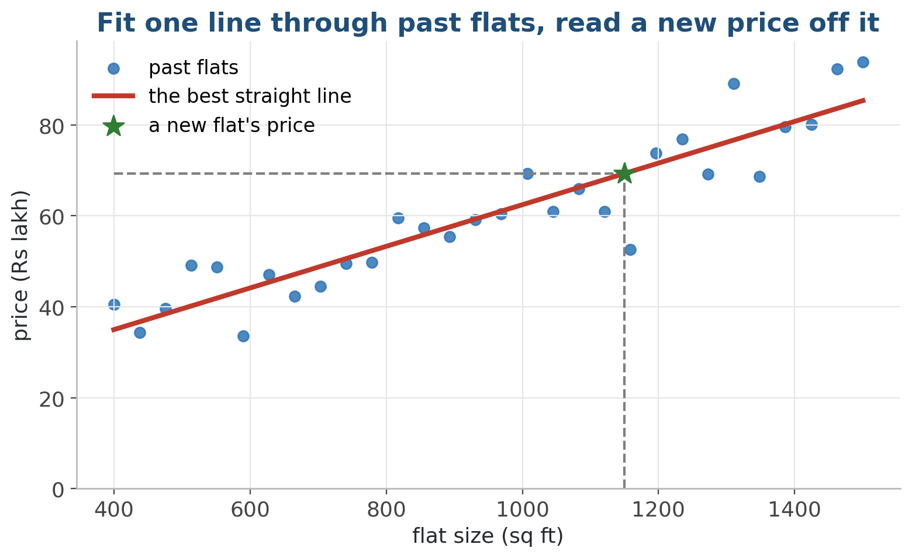
Fit one line through past sales; a new size comes in, read the price off the line.
Fit the line, then price a 1000 sq ft flat
- One lstsq call returns the best line; slope and start then price any new flat.
CODE # stack sizes beside a column of ones, then least-squares fit X = np.column_stack([flat_size, np.ones(30)]) slope, start = np.linalg.lstsq(X, flat_price, rcond=None)[0] print("slope :", round(slope, 4), "lakh per sq ft") print("start :", round(start, 2), "lakh") price = slope * 1000 + start print("a 1000 sq ft flat :", round(price, 1), "lakh") OUTPUT ▸ slope : 0.0469 lakh per sq ft start : 14.55 lakh a 1000 sq ft flat : 61.5 lakh
7 - When it breaks -- pitfalls
Copy vs view: a slice shares memory
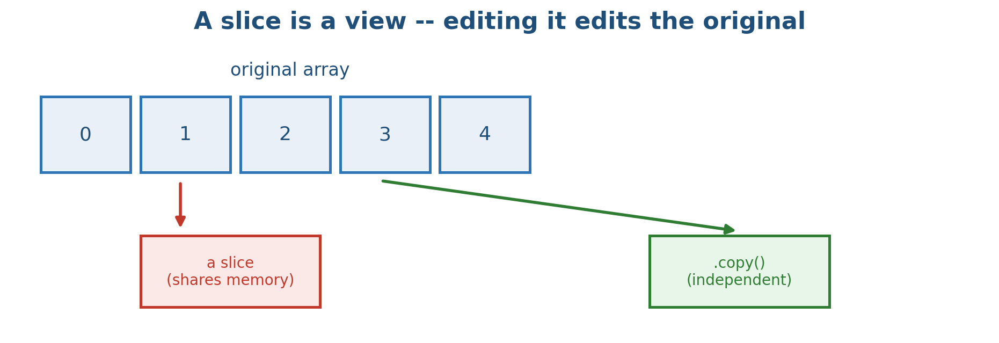
Editing a slice edits the original. Use .copy() for independence.
Whole-number arrays quietly chop fractions
- An integer array stays integer: storing 0.5 into it saves 0 silently.
- np.array([1, 2, 3]) / 2 is fine -- NumPy converts to float.
- But writing a decimal into an int array quietly truncates.
- Fix: start with decimals -- np.array([1.0, 2.0, 3.0]).
NumPy pitfalls and their fixes
- Do instead
- Call .copy() when you need a separate array
- Use float (decimal) arrays from the start
- Print .shape on everything when debugging
- x = solve(A, b) to solve systems
- Use @ for matrix products
- Avoid
- Editing a slice and expecting a copy
- Using integer arrays for fractional maths
- Ignoring shape-mismatch error messages
- x = inv(A) @ b to solve
- Using * when you meant matrix multiply
8 - Lab and wrap-up
Lab: whole lists, a solved system, and a fitted line
- In the lab: do maths on whole lists and tables, solve a find-the-unknowns problem, and fit a line for predictions -- all in NumPy.
- 1. Notebook 01: create arrays from lists; raise every price by 8% in one line; slice rows, columns, and blocks.
- 2. Add and scale whole columns, checking .shape as you go.
- 3. Notebook 02: turn two clues into equations and solve for two unknown prices with one call.
- 4. Notebook 03: fit a line through noisy data and predict a new flat's price.
- 5. Finished early? Open the Stretch cells: eigenvectors, SVD, and the normal equation from scratch.
- Deliverable: a notebook on GitHub: whole-array arithmetic, a solved system, and a fitted line with a prediction.
Key takeaways
- An array lets you do maths on a whole list or table at once -- vectorise, don't loop.
- Know an array by its .shape and .dtype; print them first when debugging.
- Broadcasting and @ let you combine arrays without writing loops.
- solve finds unknowns directly -- prefer it over computing an inverse.
- Fit a line through data with one call, then read off a prediction.
Optional - for the mathematically curious
- Everything you need for the lab is already above. The next three slides are a bonus.
Optional: eigenvectors -- the directions a table only stretches
- A general arrow gets turned by the table.
- An eigenvector keeps its direction.
- It only gets longer or shorter, by a factor lambda.
- In symbols: A v = lambda v.
- PCA (Session 11) is built on eigenvectors.
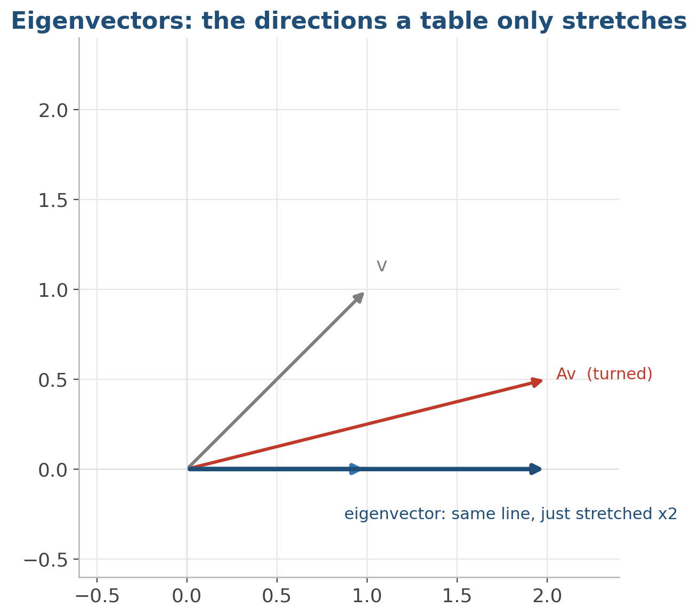
A general arrow gets turned; an eigenvector keeps its direction, only scaled by lambda.
Optional: the SVD -- rotate, stretch, rotate
- Every table maps a circle to an ellipse.
- Three steps: rotate, stretch, rotate.
- The sigmas are the stretch amounts along each axis.
- Works for any table shape (even rectangular).
- Drop small sigmas and you compress -- the basis of data compression.
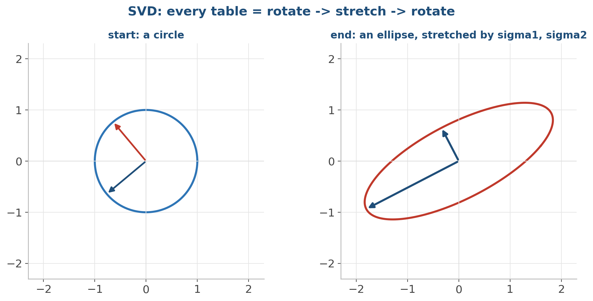
Every table turns a circle into an ellipse. The sigmas are the stretch amounts.
Going deeper: the mathematics (optional)
- A 1-D array is a vector in R^n; a 2-D array is a matrix (a linear map); a higher-D array is a tensor.
- Element-wise * is the Hadamard product; @ is matrix multiplication.
- solve(A, b) uses LU factorisation -- faster and more stable than computing A-inverse.
- eig and svd compute what the names suggest.
- The line fit is least squares: y-hat = X w projects y onto the column space of X, giving the normal equation XtX w = Xt y.
- None of this is needed for the lab.
Code & further reading
- Code: github.com/bp-course/applied-maths-in-industry › S02_numpy_linalg/
- Notebooks for this session
- Data
- Reading
01_lists_and_tables_of_numbers.ipynb 02_solve_a_system.ipynb 03_fit_a_line_to_data.ipynb No downloads -- small arrays typed by hand, plus tiny seeded synthetic data generated with NumPy New to code? primers/python_in_15_minutes.md New to vectors/matrices? primers/vectors_and_matrices.md Any unfamiliar word: primers/glossary.md NumPy user guide (numpy.org) -- 'absolute basics' page 3Blue1Brown -- Essence of Linear Algebra (YouTube) Gilbert Strang -- Linear Algebra (any edition)
Next session
- S3 -- Pandas: from bare arrays to labelled tables, the kind of messy spreadsheets companies actually hand you.